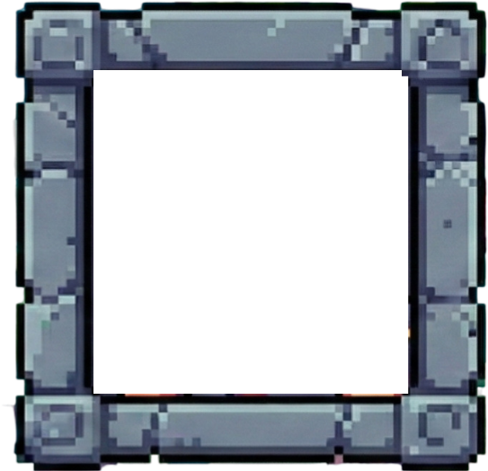
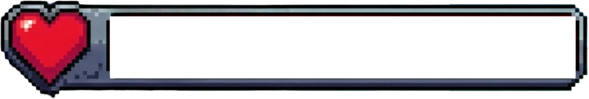
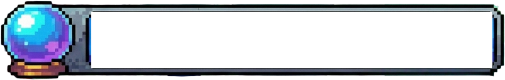

PRÓLOGO
O último experimento
01 / 05



160 / 160
110 / 110Ajustando frequências de matéria e magia...
...
Dr. Elias Valença: físico de partículas e protagonista, tentando entender por que suas equações agora respondem a símbolos arcanos. Dra. Helena Okoye: colega desaparecida no acidente, cuja voz ainda é captada pelo espectrômetro. Maera Vitriol: arquialquimista que pesquisava a Pedra de Limiar do outro lado da ruptura. Ilyana Ferro: capitã humana que protege as pontes de Vitrália. Rukk da Ferrugem: estrategista da Liga do Cobre, povo goblin que não aceita a exploração de seus cristais.
Na Terra, matéria e energia são medidas por observação e cálculo. Em Vitrália, nomes, símbolos e proporções alquímicas fazem parte das leis naturais. O AION e a Pedra de Limiar sincronizaram suas frequências: ambos os mundos passaram a disputar as mesmas constantes. O Véu Cromático é a primeira consequência visível dessa interferência.
O acidente foi uma coincidência? Helena ficou presa entre os universos? Por que um cristal de Vitrália apareceu no exterior do laboratório? Quem está reunindo materiais dos dois lados? E se fechar a ruptura exigir escolher qual mundo continuará existindo?
WASD / setas: mover · Espaço: pular no laboratório · Clique: ataque básico · F: interagir · J: diário · I: inventário
Duas realidades. Uma ruptura nas leis da matéria.
A história libera os próximos mundos conforme suas descobertas.
Clique em alimentos e poções para usar. Materiais e amostras são empilhados automaticamente.